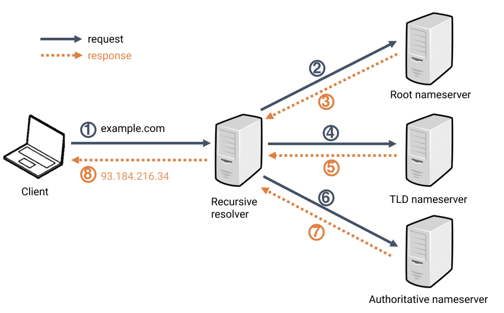

DNS

DNS (Domain Name System) resolution is the process of converting a human-readable domain name, like "www.example.com," into an IP (Internet Protocol) address, such as "93.184.216.34." This translation is necessary because computers communicate over the internet using IP addresses, but humans find it more convenient to use domain names. Here's a detailed explanation of DNS resolution using an example URL:
Example URL: https://www.example.com/path/to/resource.html
1. User Input:
A user enters the URL https://www.example.com/path/to/resource.html into their web browser's address bar.
2. URL Parsing (Optional):
Before DNS resolution, the browser parses the URL to extract the domain name, which is www.example.com in this case.
The browser first checks its local cache to see if it has recently resolved this domain name. If not, it proceeds to query the DNS system.
The DNS resolution process starts with the root DNS servers. These servers are the highest level of the DNS hierarchy and contain information about the top-level domains (TLDs), like .com, .org, .net, etc.
3. TLD DNS Server:
The root DNS servers respond to the browser's query with a referral to the appropriate TLD DNS server for the .com TLD.
The browser now contacts the .com TLD DNS server.
4. Authoritative DNS Server (example.com):
The .com TLD DNS server responds with a referral to the authoritative DNS server for example.com, which is responsible for storing the IP address associated with www.example.com.
The browser now contacts the authoritative DNS server for example.com.
5. IP Address Resolution:
The authoritative DNS server for example.com holds the mapping between www.example.com and its IP address, in this case, 93.184.216.34.
It responds to the browser's DNS query with the IP address.
6. DNS Response:
The browser receives the IP address 93.184.216.34 from the authoritative DNS server for example.com.
7. Caching (Optional):
The browser caches this DNS response to speed up future requests to the same domain, reducing the need for repeated DNS resolutions.
8. Connection Establishment:
Armed with the IP address, the browser can now initiate a connection to the web server associated with www.example.com, using the HTTP or HTTPS protocol, as indicated by the URL scheme.
9. HTTP Request:
The browser constructs an HTTP request based on the original URL and sends it to the web server at 93.184.216.34, requesting the resource specified in the path, such as /path/to/resource.html.
10. Server Response:
The web server processes the request, retrieves the requested resource, and sends an HTTP response back to the browser.
11. Page Rendering (Optional):
The browser renders the web page using the content received from the web server.
In summary, DNS resolution is a critical step in web communication that allows users to access websites using human-readable domain names. The DNS system helps translate these names into the corresponding IP addresses, enabling browsers to establish connections with the correct web servers and retrieve the requested content.